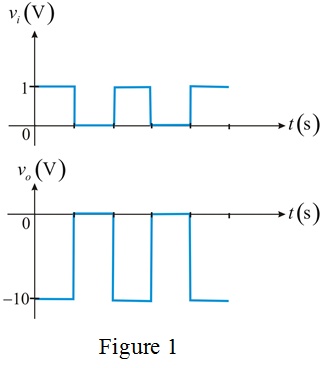

Refer to Figure 2.5 in the textbook.
Determine the gain of the circuit,  .
.
Therefore, the gain of the op amp is.
Then, the output square wave levels are.
Hence, the highest value is.
Hence, the lowest value, is .
Refer to Figure 2.5 in the textbook.
Determine the gain of the circuit, .
Therefore, the gain of the op amp is.
Then, the output square wave levels are.
Hence, the highest value is.
Hence, the lowest value, is .
Determine the average value of voltage, .
Therefore, the average value of voltage, is.
Sketch the wave-form of the output voltage.

Therefore, the sketch of output voltage is shown in Figure 1.